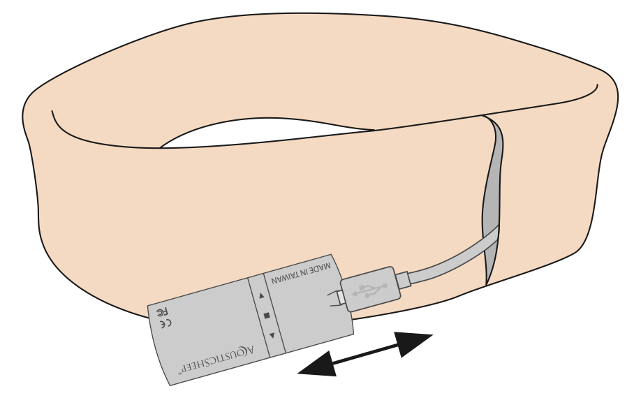

How to Put on Your Headphones
-
1. Locate the flat speakers inside the headband. One is on each side.
-
2. Place the headband on your head, ensuring the tag is at the back.
-
3. Adjust the speakers so they are positioned directly over your ears.
How to Turn On Your Headphones
-
1. Remove the Bluetooth® module from the hook-and-loop opening at the back of the headband.
 -
2. Press and hold the center button on the module for 5 seconds until you hear ascending tones and see a blinking red light.
How to Charge Your Headphones
-
1. Open the hook-and-loop opening and remove the Bluetooth® module.
-
2. Plug the micro-USB cable into the module (ensure the USB symbol faces you).
-
3. Connect the cable to a USB port or wall adapter. A red light will appear during charging.